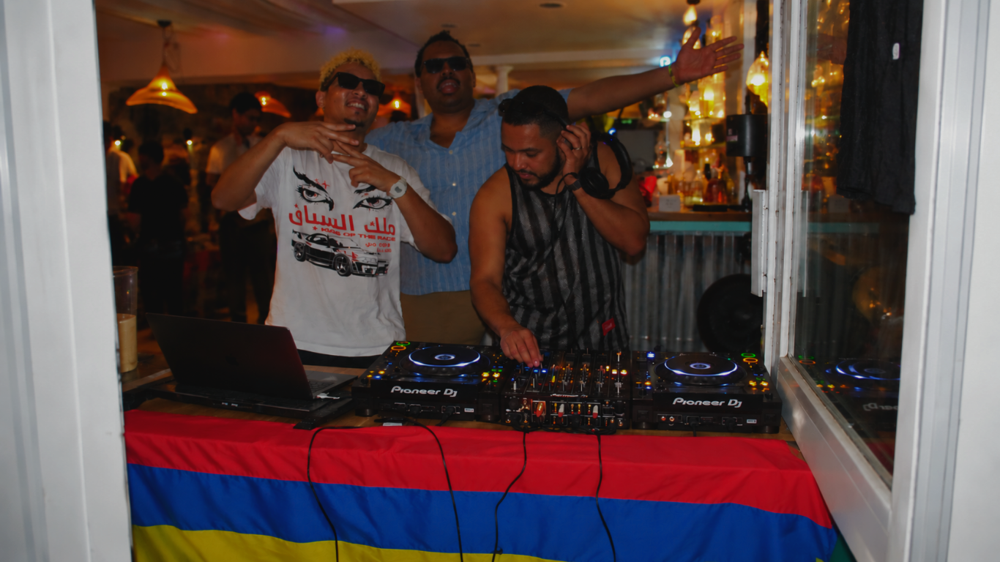

HOMESICK CREATIVE
THREE BROS.
ONE VISION.
WHO WE ARE
We tell stories through music, photos, videos, moments and culture.
Homesick Creative started with three creative bros, one shared vision, and the desire to tell stories our own way.
We're a mix of everything that inspires us — the sounds we listen to, the people we meet, the places we go, the moments we live and the cultures that shape us.
OUR APPROACH
NOT JUST CONTENT.
STORIES.
WHAT WE CREATE
(01 — 04)01
Photography
02
Film & Video
03
Music & Events
04
Culture & Moments
Sometimes it's a concert. Sometimes it's a portrait. Sometimes it's a DJ set, a night, a journey or simply a moment worth remembering.
WE CREATE.
WE CAPTURE.
WE TELL STORIES.
GOT SOMETHING IN MIND?
LET'S CREATE SOMETHING